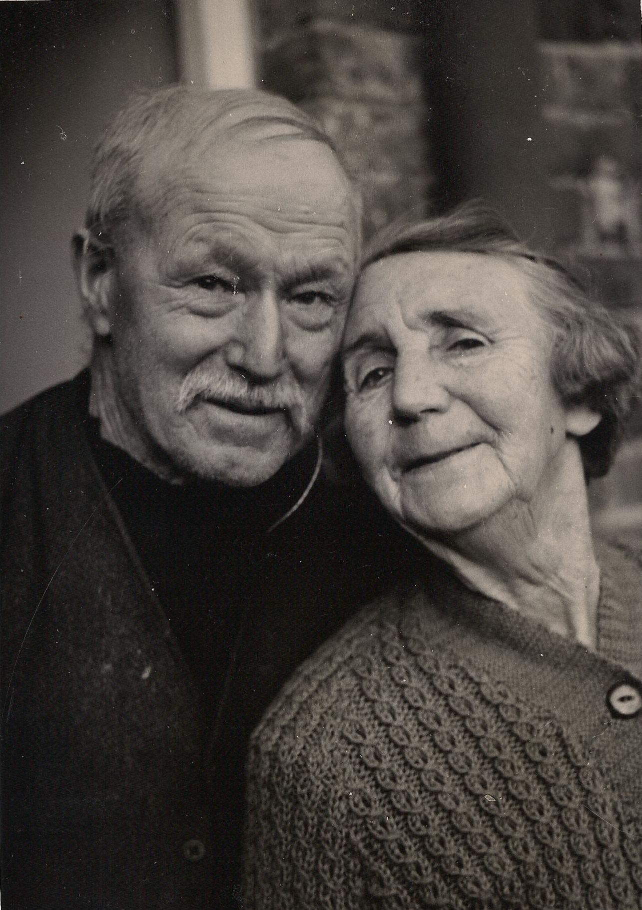
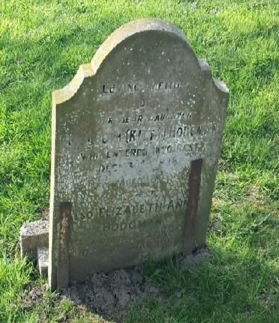
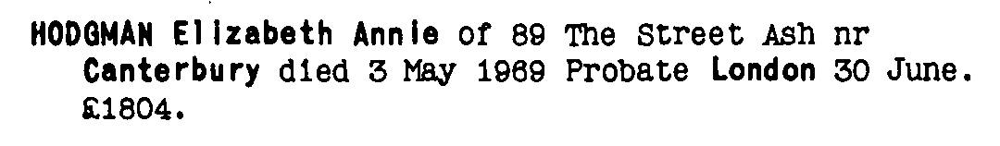
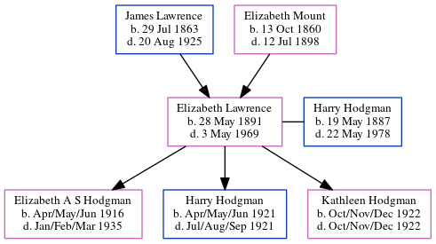

Elizabeth Annie Hodgman (née Lawrence) 1891 - 1969
[ Home ] | [ Calendar ] | [ Surnames Index ] | [ Census Index ] | [ Family History ]The child of James Lawrence (an agricultural laborer) and Elizabeth Mount (a domestic servant), Elizabeth Lawrence, the great-aunt of Nigel Horne, was born in St Lawrence, Thanet, Kent, England on May 28, 18911,2,3,4,5, was baptized there on Jun 28, 1891 and married Harry Hodgman (a farm houseman with whom she had 3 children: Elizabeth A S, Harry J and Kathleen C) in Thanet, Kent, England around Feb 19158.
During her life, she was living in Staple, Kent, England on Mar 31, 19011; at Oast Cottages, Cleve, Monkton, Kent on Apr 2, 19119; at Hoaden Cottages, Ash, Kent on Sep 29, 19392; and at 89 The Street, Ash, Kent in 1969.
She died on May 3, 1969 in Canterbury, Kent, England4,6,7 and was buried at Saint Nicholas Churchyard, Ash, Kent after May 3, 1969.
Parents
- James was born on Jul 29, 1863
- Elizabeth Ann was born on Oct 13, 1860
Children
- Elizabeth A S was born in Apr/may/jun 1916
- Harry J was born in Apr/may/jun 1921
- Kathleen C was born in Oct/nov/dec 1922
Citations
- 1901 England Census Online publication - Provo, UT, USA: The Generations Network, Inc., 2005.Original data - Census Returns of England and Wales, 1901. Kew, Surrey, England: The National Archives of the UK (TNA): Public Record Office (PRO), 1901. Data imaged from the National
- 1939 Register - Findmypast (was the wife of the head of the household)
- England & Wales deaths 1837-2007 - Findmypast
- England & Wales, Death Index: 1984-2005 Online publication - Provo, UT, USA: The Generations Network, Inc., 2007.Original data - General Register Office. England and Wales Civil Registration Indexes. London, England: General Register Office. © Crown copyright. Published by permission of the Cont
- England & Wales, FreeBMD Birth Index, 1837-1915 Online publication - Provo, UT, USA: The Generations Network, Inc., 2006.Original data - General Register Office. England and Wales Civil Registration Indexes. London, England: General Register Office. © Crown copyright. Published by permission of the Cont
- England & Wales Government Probate Death Index 1858-2019 - Findmypast
- England Billion Graves cemetery index - Findmypast
- England & Wales Marriages 1837-2005 - Findmypast
- 1911 Census for England & Wales - Findmypast (was age 20 and the daughter of the head of the household)
- 1901 England, Wales & Scotland Census - Findmypast (was age 9 and the daughter of the head of the household)
Media
Elizabeth Lawrence - Harry Hodgman

Elizabeth Annie Lawrence - gravestone

Elizabeth Annie Lawrence - probate

Elizabeth Annie Lawrence - gravestone
England & Wales births 1837-2006 - BMD/B/1891/2/AZ/000366/314
England & Wales deaths 1837-2007 - BMD/D/1969/2/AZ/000532/136
1939 Register Transcription - TNA-R39-1819-1819C-010-16
England Billion Graves cemetery index - US/BMD/BILLION/009905257
1939 Register Transcription - TNA-R39-1819-1819C-010-15
England & Wales Marriages 1837-2005 - BMD-M-1915-1-AZ-000535-021
1911 Census For England & Wales - GBC-1911-RG14-04477-0177-3
Kent Baptisms - GBPRS/CANT/B/96405808
England & Wales Government Probate Death Index 1858-2019 - GBOR/GOVPROBATE/C/1969-1969/00105704
Family Tree
Generated by ged2site. Last updated on Jun 11, 2024